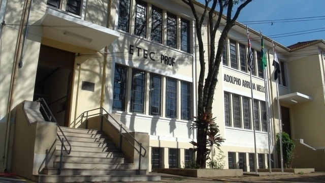

Sobre nós
As Escolas Técnicas Estaduais (ETECs) são instituições de ensinos técnico, médio e técnico integrado ao médio (ETIM), pertencentes ao Centro Estadual de Educação Tecnológica Paula Souza (CEETEPS), autarquia da Secretaria de Desenvolvimento Econômico, Ciência e Tecnologia (SDECTI) do estado de São Paulo. História Na década de 1960 houve reuniões entre o Conselho Educacional para a criação de instituições que atendessem à necessidade do acompanhamento profissional e expansão industrial de São Paulo. A partir de 1967, quando Roberto Costa de Abreu Sodré assumiu o governo do estado, foi que a ideia de se criarem escolas técnicas foi se tornando cada vez mais concreta. Em 6 de outubro de 1969, o Centro Paula Souza iniciou suas atividades. Atualmente são 198 escolas, que ministram cursos técnicos e de ensino médio em 150 municípios do estado. As ETEC estão entre as melhores escolas públicas do Brasil, quando comparadas com outras escolas de ensino médio.
